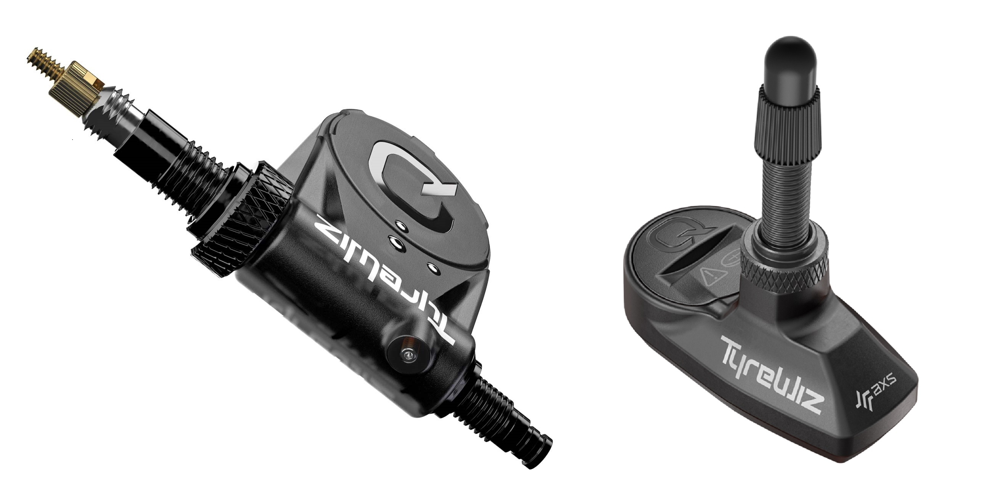
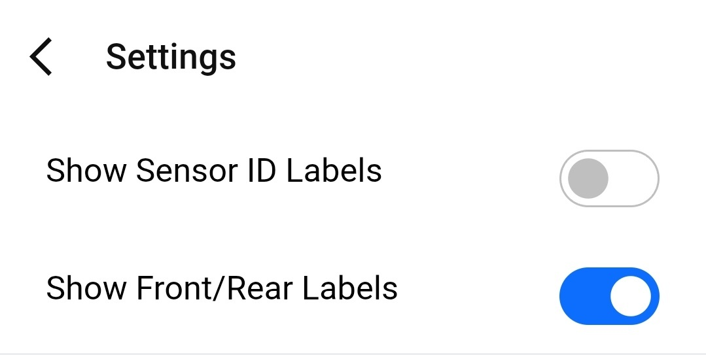
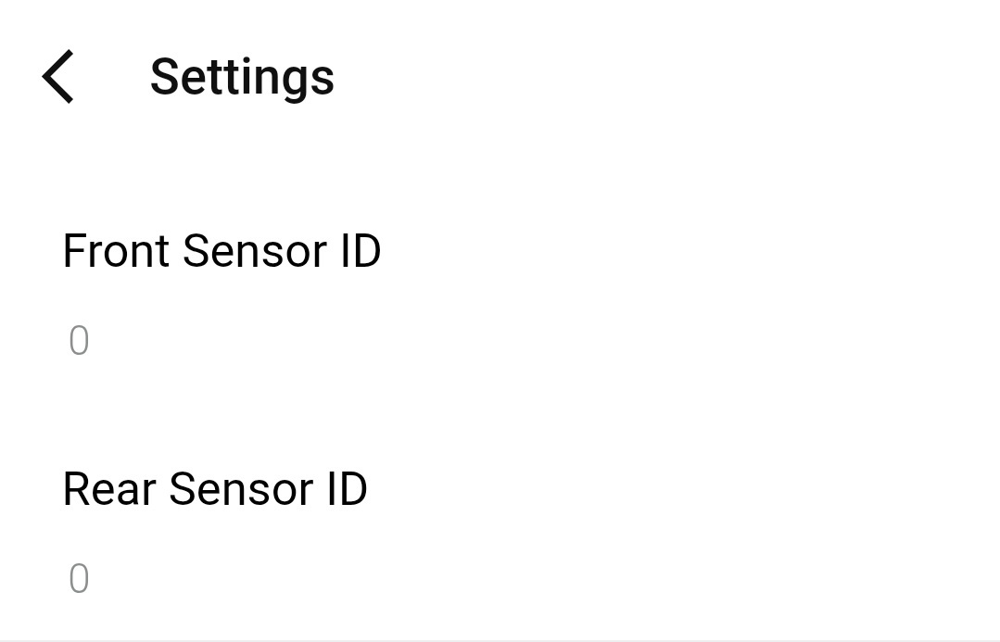

Platform support
Edge and watch support
TubeWitch supports Garmin Edge devices and compatible watches, including vibration alerts where supported.
Feature overview
TubeWitch supports Edge devices and watches, multiple sensor sets, configurable display modes, detailed alarm controls, timeout handling, and activity review through Garmin Connect IQ stats, with alert timing controls designed to reduce nuisance duplicate alarms.
TubeWitch is the most flexible option for showing TyreWiz data on Garmin, with broad control over labels, colors, layout behavior, alarm types, timing, and compatibility settings.

Platform support
TubeWitch supports Garmin Edge devices and compatible watches, including vibration alerts where supported.
Sensor management
Store up to five named bikes or wheelsets, with front, rear, or both sensors enabled per set.
Touch controls
On touchscreen devices, Touch Data Field combines set switching, TubeWitch disable, and manual rescan after timeout.
Ride review
Average pressures and the active sensor set name are saved to Garmin Connect IQ stats after the ride.
TubeWitch gives more display and alert control than any other Garmin TyreWiz option: colors, labels, layout orientation, background style, alarm outputs, trigger timing, reset timing, decimal precision, and compatibility behavior can all be tuned to suit the device and the ride.
Manual mode keeps one configured set active. Auto Switch cycles through each configured set for 10 seconds until an active set is found.
Default 60 seconds. If both sensors disconnect while Active Sensor Set is Auto, TubeWitch waits for this delay before scanning other sets again at 10 seconds each.
Optional on touchscreen devices. The setting combines Touch to Switch Sensor Sets, Touch to Disable TubeWitch, and Touch to Rescan after timeout.
Display Style offers TubeWitch Mode and Compatibility Mode. TubeWitch Mode is the default, but it may be unavailable on some devices that are not yet fully supported. Compatibility Mode uses dynamic font sizing and positioning and works across all devices.
Choose Auto, Vertical, or Horizontal layout orientation.
Choose Auto, Dark, or Light background styling for clearer contrast.
Customize the separator used in horizontal label layouts.
Choose Auto, 0, 1, or 2 decimal places depending on layout size and readability.
TubeWitch supports PSI, BAR, and kPa. BAR and kPa layouts support decimal precision.
High and Low Pressure Alarm groups keep alert behavior separated for more granular control.
High and Low Pressure Alarm groups organize alert settings independently for more detailed tuning.
Popup alerts, audible alerts, and vibration alerts are available where device support exists.
Alarm Trigger Delay, Alarm Reset Delay, tone selection, and alarm box and font color control how alerts behave and appear.
Setup messages help identify first-time connection behavior, open connections, and missing-sensor conditions.
Default 15 minutes. During an activity, timeout minutes can be configured. If sensors are not found, TubeWitch stops scanning to save battery and shows a clear "Sensor(s) Not Found" message.
No timeout is applied before an activity starts.
"?" indicates stale data while reconnect is in progress. "X" indicates the timeout was reached and the radio was turned off for that sensor.
After timeout, scanning can be restarted with Touch Data Field on supported devices or by using Stop and Resume on the activity.
Ever stop for a quick lunch but want to check your tire pressures on your Garmin before you get going again? Instead of just showing "--" while your sensors are inactive or out of range, TubeWitch keeps the last known pressures on screen and shows a "?" while it tries to reconnect.

After a full Garmin Edge power cycle, not sleep and wake, or at the start of a new activity on a watch, Auto Switch cycles through configured sensor sets every 10 seconds until an active set is found. Even with five bikes configured, the active set is typically found within about one minute.
If the wrong configured bike is found first, TubeWitch stays locked while those sensors remain in range. Once the ride moves out of range and the sensors become stale ("?"), Auto Switch Delay begins. After the default 60-second delay, TubeWitch resumes cycling through all configured sensor sets every 10 seconds. After leaving the garage, the active bike is usually found within a few minutes.

